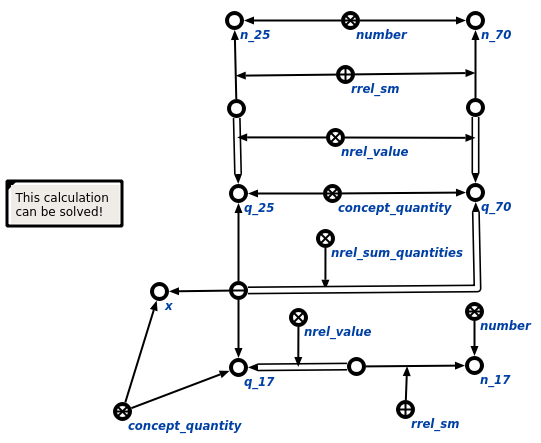

Задачей scp-программы проверки размерностей величин является проверка размерностей величин, участвующих в выражении. Первым входным параметром данной scp-программы является связка математического отношения, элементы которой необходимо проанализировать, вторым - комментарий о результатах анализа величин на предмет наличия единой размерности. В ходе выполнения программы явно указывается связь со следующими ключевыми узлами: отношениями значение* и идентификация*, участвующими в цепочках значений и идентификации для величин и чисел соответственно, а также сами абсолютные понятия величина и число. Ниже представлены результаты выполнения процедуры:
